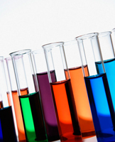
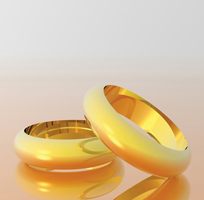
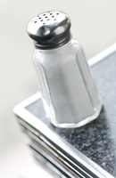

Unit 1: Matter, Chemical Bonding, and Chemical Trends
Activity 1: Harmful Chemical Substances
Content
Classification of Matter
Matter is classified into two main groups: pure substances and mixtures. Pure substances can be divided into two groups: elements and compounds. Mixtures can be classified according to their physical composition. Two popular groupings are mechanical mixtures and solutions. Their differences depend on the different physical properties of the chemical’s properties.
Mixtures
As described above, mixtures are classified as either a solution (e.g. vinegar consists of acetic acid mixed with water) or a mechanical mixture (e.g. chocolate chip cookies consist of cookie dough and pieces of chocolate). The physical and chemical properties of a mixture are dependent on its composition.
Solutions can be in any of the three states of matter: solid, liquid or gas. Pure air is considered to be a gaseous solution. Air consists of a variety of gases mixed together to appear as one. The solutions in the test tubes below, contain different types of particles and appear to have one part or phase. The 14K gold rings contain different metals, usually copper and gold, and there is one visible part or phase.
Examine the following pictures of solutions:
|  |  |
Mechanical mixtures are distinctive types of mixtures in that there is more than one visible part. A deluxe pizza is a mechanical mixture because it consists of many visible parts. Ice cream with small pieces of cherries is another example of a mechanical mixture. An ice cube in water is a mechanical mixture even though they both are made of the same particles. However, when the ice melts, the one visible part consisting of pure water is now considered to be a pure substance.
Examine the following pictures showing two different types of mechanical mixtures.
 |
Pure Substances
Elements and compounds are pure substances because they consist entirely of one type of atom or molecule. Each element and molecule possesses its own physical and chemical properties. A pure substance can be represented with a symbol if it is an element (i.e., Cu for copper) or a molecular formula if it is a compound (NaCl for sodium chloride- commonly known as table salt). Examine the following pictures showing these substances:
|  |
Check Your Understanding
- Classify each substance as a mixture or a pure substance.
List of Substances Classification a. Window Cleaner ____________
b. Baking Soda ____________ c. Sugar ____________ d. Tap Water ____________
 Answer
Answer
Chemical and Physical Properties
The role of a chemical substance, whether it is in its pure form or mixed with other chemicals, depends on its physical and/or chemical properties. If you want to clean your window, you want a window cleaner to clean the window and at the same time, quickly evaporate. Hand soap helps you to clean your hands without hurting you. Helium gas allows balloons to float in the air. Mercury in a thermometer helps us to record the temperature.
Check Your Understanding
- Match the following chemical substances with their property or function.
Chemical Substance Property/Function 1. Antifreeze a. Fuel for a car. 2. Air Freshener b. Unplugs pipes. 3. Bleach c. Keeps car engines cool. 4. Drain Cleaner d. Air in a room smells nice. 5. Gasoline e. Cleans a stain.
Answer
This is a disclaimer. External Resources will open in a new window. Not responsible for external content.
Unless otherwise indicated, all images in this Activity are from the public domain or are © clipart.com or Microsoft clipart and are used with permission.